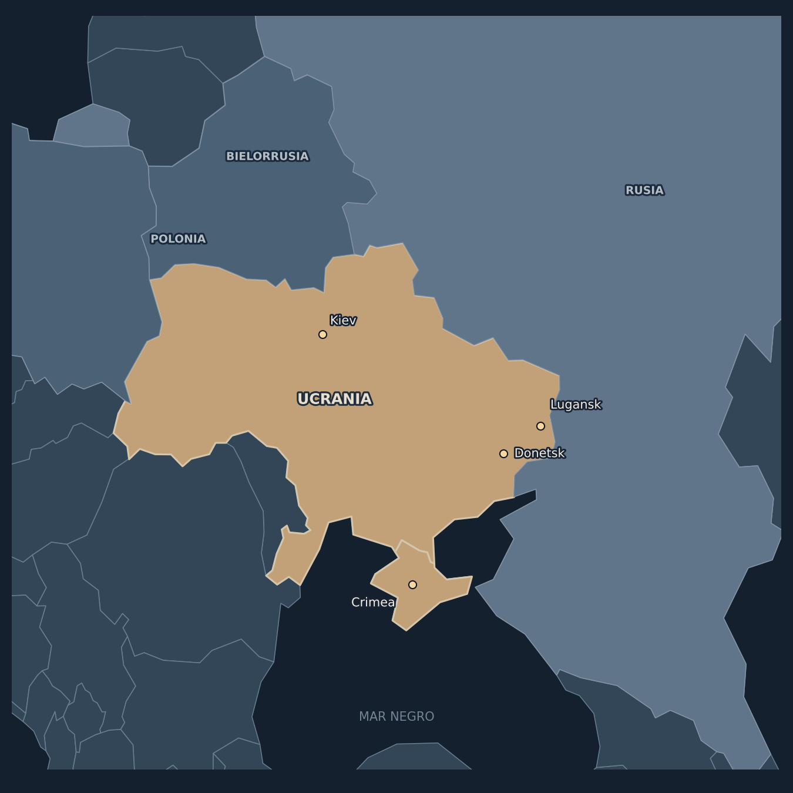

CAPÍTULO I / CARTOGRAFÍA
DONDE
COMIENZA
TODO
Un mismo territorio. Distintos momentos de la historia.
UCRANIA · EUROPA ORIENTAL
CLIC: acercamiento geográfico, no nueva viñeta
Mapa prototipo para estudio visual — no representa fechas históricas anteriores a 1991.
I / IV
TRANSFORMACIONES / 1991
UN ESTADO
INDEPENDIENTE
La historia cambia de marco: de república soviética a Estado soberano.
ESTUDIO TIPOGRÁFICO
1991
Referéndum de
independencia
1 DE DICIEMBRE
La tarjeta es una maqueta editorial; NO simula un documento de archivo auténtico.
Escena concepto: sustituir por fotografía o documento original acreditado en la versión final.
II / IV
PAUSA CON EL PÚBLICO · HISTORIA01 / 03
¿En qué año se celebró el referéndum que confirmó la independencia de Ucrania?
Respuesta: 1991 · 1 de diciembre
Un clic para revelar; otro para continuar.
Pregunta de demostración. El expositor controla el resultado.
III / IV
TRES PERSPECTIVAS, UN CONFLICTO
NUESTRO RECORRIDO

01 / COMPLETADOHISTORIAOrigen y evolución

02 / SIGUIENTEECONOMÍAUn nuevo capítulo

03 / PENDIENTEHUMANIDADImpacto humanitario
Referencia de retorno al hub. Las tarjetas pertenecen a una única arquitectura compartida.
IV / IV
CAPÍTULO II
CONSECUENCIAS
ECONÓMICAS
Energía, alimentos y repercusiones en el Perú.
PORTADA PROVISIONAL. No desarrollamos el contenido del capítulo II.
FIN